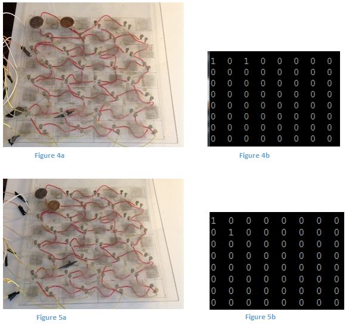

Hi! Welcome to my site :)
I am a computer science student and hobbyist who's taken courses at Dal and NSCC.
I made this site as an easy way to get examples of my work to people, and I expect it will transform over the year.
Cheers!
3D Model
This pawn is an original 3d design that I made in Fusion 360. Above we can see the real thing next to a rendering of it. It was printed with PLA filament on a Makerbot unit and took about half an hour.
The print did well, however next time I will use ABS if possible. In my opinion it is still slightly rough at close inspection and if I use ABS I can make it smooth and shiny like the render by giving it an acetone vapour bath. An acetone vapour bath is a smoothing technique in which the printed item is placed under a larger container. The container, perhaps a coffee can, has paper towel fixed to its insides with magnets. The paper towel is saturated with acetone, which can melt ABS plastic. After an hour or so, the vapours from the paper towel uniformly melt the printed ABS giving it a shiny quality similar to the render.
Robot Checkers
Here's the codeThe Brains
The goal here was to make a checkers game with Python that moves the pieces in real life. Of course there are already checkers programs, but they seem lifeless. A big part of this for me was also simply that I wanted to test my skills and create something cool. Although it is not yet functional, I would say it’s about seventy percent there. The game is made up of three basic parts; the board, the robot arm, and the code that figures out what to move. The arm is controlled through an Arduino and both it and the board are hooked up to a Raspberry Pi computer. To play, you will move a piece. The piece will connect contacts on the board that the computer can pick up on. The computer will update its thoughts on what the board looks like and will apply a function that tells it what to counter with. It will then send that information to the arm, which shall play the move. Then it will wait for you to go and repeat the process.
The code uses an integer array to represent the board. It has to be formatted to be viewed as a matrix. It looks like a long number otherwise. At the time of my starting this project I was unaware that you could also use a two dimensional list, so the squares are referred to as numbers from left to right instead of XY coordinates. The program understands that the values 2 and 4 are black, and that 1 and 3 are white. The larger of each is that colour’s king. Kings can move in any direction, and normal pieces can move in one direction. The game starts off with the computer being black, so you can start first each time!
There is a scoring system for the computer to determine what a good move is. Kingship and the capture of a normal piece is one point. Capturing an enemy king is 1.5. The system is used to play through a tree of all a colour’s possible moves to a limitation of a few jumps. Each time it updates a path’s score and appends it to a list. At the end of the tree it chooses a high score, or between equivalent scores randomly.This randomness ensures that because it scans from the top left down, that it won’t consistently pick the move of equal score on the left of its square. That would be too predictable. For example, in this scenario (Figure 1), black (2) has to move. If either piece moves diagonally towards the white piece (1), it will be jumped, causing score of -1. The best score is equally for each piece to move diagonally away from the white 1 for a superior score of 0. The computer will randomly provide the coordinates below because they are equal in value. if not for the randomness, it would always choose the leftmost move because it scans moves from the left. To interpret them, they are read as the first square number moves to the second square number (so square 46 --> square 55).
In this following example (Figure 2), we see that the best possible move is for the middle black to move diagonally toward the white piece. This traps white on the next turn for a definite black victory. Wins are calculated as being many times more valuable than regular moves. They are calculated by dividing a sufficiently large 600 by the number of moves it takes. This way a win is valued in terms of hundreds, which automatically outcompetes regular multi-jump moves that may gain only double digits. They can be compared against possible wins that take different amounts of moves to achieve, so that a win in 1 move is (600/1) is more valuable than a win in three moves (600/3). If we take away the possibility of an instant win, such as in Figure 3, we see that this changes.
Figure 3 shows an interesting limitation of the algorithm. It successfully determines that whilst being under attack from the white king, any move is equivalent here for the next 3 moves. If black attains kingship, it will have +1 from getting a king, but -1 from white’s king capturing the middle piece. This results in 0. It will also get 0 if the middle piece moves away from the middle, because white’s king could chase it and neither side would gain more than 0. This illustrates that it can only decide based on a predetermined amount of moves. A human player would probably not opt to gain a king at the expense of a piece, and I would expect that this is because a human is aware of its possible value over the duration of the entire game, not just over the next 3 moves. Additionally, if there are two pieces so far apart that the number of moves calculated in advance does not put them in contest, then they tend to move randomly. For instance, if they are so far apart that the number of moves looked ahead only permits that the pieces contest each other once, such that they receive an insignificant score, say zero, they won’t know to move closer to each other to improve their opportunities of capturing so they wander.
There is a function listM(), that tells the computer all the possible moves of a colour and each corresponding score. The following list shows the possible moves for white in Figure 4. The scores for each move are listed after each move. The nested bracket move starting at 21 for a score of 3 is a multi-jump. In this case white would certainly take the multi-jump due to its high score.
[[16, 7], 1, [21, 7], 1, [21, 28], 0, [21, 30], 0, [21, [3, 17, 35]], 3, [53, 44], 0, [53, 39], 1.5]
Some functions included in the program can decide whether a move is legal or not, choose the highest possible move for a colour, execute that move, capture pieces, or upgrade a piece to a king. Included in the code are a couple similarly named functions that are different attempts at the move tree predictor. Think(2) is the one that works best at the moment. It has an effort 0-3 value that it takes in to tell the function how many steps plus one in advance to calculate. 2 calculate three moves in advance. I’m currently working on Think2() which has a bug where it dies if it calculates a win for black and also has yet to update the move coordinates. That aside though, if you run it you can get an interesting look into each step being calculated and the trickle down scoring system where the worst scores for each move are gradually filtered out. It gives a good demonstration of the exponential move tree.
This brings us to another limitation of this type of algorithm. It is exponential in nature. This means that Think() totally brickwalls at effort level 4 because it takes too long to calculate. Also, the more moves a colour can make, the longer it takes to think. In light of this, perhaps the total number of moves would influence how far ahead to think. It could allow more time to process the fewer moves are available to it. One reason it takes long is because it calculates every move path from the starting move. This takes a lot to calculate. I think it was in my benefit to do it like this at first, because I found that algorithm to be highly complex and difficult to represent in code. By coding it in the most straightforward way possible, I was able to actually make it work. Now that I have a decent understanding of this exponential tree scoring system, I realised that I can make it much more efficient by getting it to undo the last step of the tree. This way it will just go back one move and start calculating from the second last part of the tree instead of starting at the beginning again. For example, in the multi-jump from figure 4, it would start calculating from the 17 instead of the 21. This saves alot of redundant processing.
It is also worth noting that Think() has a bug where if the first move it calculates can be countered as a multi-jump, then its brain explodes. These issues will be addressed in the new version. I’m not sure whether it’s good or bad that this program is about eight hundred lines. It is definitely the most I’ve ever coded, and I’ve been chipping away at this since this past December inconsistently. I don’t know what the standards would be for a game like this, so I have nothing to judge it against. In terms of practicality, it runs fine on my outdated Raspberry Pi, so I suppose it doesn’t really matter.
I’ve wanted to learn about machine learning for some time now. If I can get Think2() to work decently enough, then I should be able to use that algorithm to play itself and provide sample data for an intelligent program to learn from.
The Board
Figure 4a shows the current version of the board with two quarters on it. I admit that it was somewhat tricky to capture an image that looked clean, as the board is clear Plexiglas and shows the wiring underneath it.
Each square has two contacts, which are cut common nails in this version. In a previous version I painted on wood glue that was made to be conductive by mixing it with graphite powder. It was resistive in the thousand Ohms range. I believed the glue’s resistance was too great to allow functional conductivity, so I painstakingly rewired the board to bring it to its current form. The nails are soldered into a wiring matrix that connects rows and columns respectively. Figure 4b is a screen capture of a function tasked with scanning the board. As you will have probably guessed, Figure 4b is a matrix that represents the high or low state of the contact points on the board. You can see that it successfully determines that squares 1 and 3 have pieces on them. Figure 5b demonstrates how the computer would represent a move. This was tested using quarters, and the actual pieces for the final product will have conductive bottoms. All of this wiring feeds into the computer’s input/output contact pins. The way the function figures out the board state is by using a loop to turn each column output on and off and comparing the column number with the row input number. For example, if column one is on and row one detects high, then square one must have a piece connecting the contacts.
You notice that this representation of the board can only provide information on whether or not a piece is on a square. There is to be a completed scanboard() function that compares this digital information with where it remembers the pieces are. It knows that any pieces not present in the scan should be taken off, and it knows that there will be one square that used to be empty but is now a white piece. With this, one can update a representation of where the actual pieces are currently instead of just 1 or 0.
The success of the example I’ve used here belies the board’s true functionality. To obtain these samples, I had to press the quarters firmly down to achieve sufficient contact. In fact, the wood glue version worked better for some reason. In any case, there is certainly still an issue with contact and input voltage. I took this matter to industry professional Brian Shewan who suggested that it was a noise issue, and that I apply hysteresis to the signal. Hysteresis is essentially a noise gate feature where it pulls the signal fully high or fully low depending on a threshold. You could set the threshold to be very low thereby making any small, poorly conducted voltage pulled high. This would clean up the signal nicely and make any degree of contact on the board able to be interpreted by the Raspberry Pi, thus fixing the problem.
The Arm
Attached video Arm45-90 is a demonstration of the arm. I’ve come upon the realisation that the arm will have to be improved upon in terms of mechanical design for it to work correctly. The video shows one of the three joint servos taking in degrees from the serial monitor in the Arduino IDE. The arm can also be sent degrees from the terminal in the RPi when it is connected through USB. The idea here is that it has a base plate servo and two arm joint servos that can programmatically position its end at an XYZ coordinate. The current arm has about enough structural stability to support its own weight, and it still requires a claw to be added at the end to move the pieces. This means that the arm will certainly need a remake to be useful.
I have made a function ArmAngles2() that takes in a desired XYZ point and returns the corresponding servo angles which position the end at that point. It does this by representing the arm as several right angle triangles that are related and using right angle math. Below we can see what angles are returned for if we want the endpoint to be at (3,4,2).
Thought on Bot
I’ve learned quite a lot from coding such a beefy program. I’ve been able to use math in the program, which would have been an intimidating subject for a younger me, and most importantly I’ve learned that the syntax of coding in Python is less difficult than the logic. One must really understand what you want the end result of a function to be. Having a good understanding of the inputs and outputs of a function is a key element. If I had to do this again, I would compartmentalize the functions more, write more pseudo-code, and test more thoroughly. By breaking up larger parts of code into smaller functions the program would be easier to debug. Speaking of which, I am still an amateur at using the debugger but I have finally understood its power. In previous programs I have never really needed to use it because they were not very complicated, and less than 100 lines.
Keyboard Pitchwheel Fix
I enjoy using studio software and making music. On a keyboard, there is a wheel called the pitchbend that, not surprisingly, modulates an instrument’s pitch. It is a potentiometer inside the wheel that sends voltage information to the computer, which modifies the pitch accordingly. Over the past several months my keyboard has started acting up by randomly sending pitch information to the computer. This is highly irritating when you are trying to play something. It basically made my keyboard totally useless.
I opened up the keyboard and was able to determine that it was being caused by the hardware and it not a software driver issue. I am waiting on the appropriate potentiometer to replace the current faulty one. In the meantime I have regained utility of my keyboard by soldering in some resistors to simulate the voltage of an unmoved pitchbend. It turns out that one can’t just cut the cords and leave it like that because they would be left in a state that is called ‘floating’. This is a state that is not a fixed voltage and is subject to noise from charges in the air, which results in constantly random pitch information being sent. Below is a picture of the surgery.
An old Jazz history professor of mine once told me of how there is something electronic musicians do called circuit bending. Circuit bending is when people hack their hardware to install new sensors and modulation routes. With my newly gained knowledge of circuitry, it excites me to think of this as being an option. One could, for example, replace the pitchbend potentiometer with a high frequency oscillator circuit routed through an infrared sensor to imbue an instrument with an FM effect the closer ones hand gets to the sensor. There are other examples of this sort of hackery in music; one artist that utilises interesting sensor mapping hardware is Imogen Heap .
NPN H-Bridge
This H bridge circuit is a staple in mechatronics projects. They are used to change the direction of current flow, typically so that one might control the direction of a motor. There are two contact points that dictate the direction of flow. They use a small input voltage, and the major benefit of using such a device is that it can be sent signals intelligently from a controller like an Arduino or Raspberry Pi.
I’ve used a voltage regulator that I soldered together out of a kit to provide five volts, however if more power were being used in the circuit for multiple motors, then I would install flyback diodes. There is an effect when using components with electromagnetic fields where upon the collapse of the field, a negative voltage spike is sent back through the circuit. With more power this would likely fry the transistors. This reverse spike is prevented by the flyback diodes which act like a one way valve.
Here is essentially the same design, except I used 330 Ohm resistors instead.